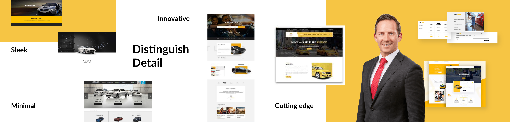

Website & CMS for a mobile car wash company

01 Brief
Distinguish Detail is a mobile car wash and detail company based in Arlington, TX. We reached out to the owner, Rick, and offered to design and build his website. Rick's mission is to provide high quality, flexible car care service to a business clientele. Currently, the company does not have a site.
Objectives
- Improve communication with clientele
- Grow sales
- Spread brand recognition
- Find quality, knwoledgeable and trustworthy employees
Results
- Contact Form
- Appointment Scheduling
- CMS to manage contacts & appointments
My Role
- Personas
- Branding
- Living Style Guide
- Front-End Development
- Back-End Development with mySQL
- Database-Supported CMS
Credits
- Reese Oxner.....Project Manager & Front-End Development
- Melanie Pena.....Visual Design
- Ayo Amide.....Video Director
Timeframe
- 2 months
03 The "X Factor"
Distinguish Detail drives directly to the customer. In fact, they don't have a physical location. This is a competitive advantage that we aim to convey in the website.
02 Understanding the Challenge
Rick had an auto detailing business 7 years ago. His goal is to reconnect with his clientele and rebrand the business as a mobile car care service. Currently, Rick is the only employee. He is seeking to hire new employees and possibily find investors.
04 The Survey
Through an online survey, we inquired about the Rick's business model, goals, and site objectives. Below are the key takeaways and site implications.
(Only a few questions from the survey are shown).
Q - What is the main business problem you hope to solve with the site?
"To respond to the customers timely."
Site Implications - The site needs an efficient system to facilitate professional communication with clients regarding appointments and special deals.
Q - What are the main reasons you would like a website?
"I would like a website for the convenience, to reach more people and for effective communication and information for my business."
Site Implications - The site needs to serve both the client and the user. They may have different goals, but they both share the need for convenience. The user needs to be able to quickly find key information (hours, services, schedule an appointment). The client needs to communicate their mission, spread their brand, and network within their target market.
Q - Will you have a permanent location?
"In the first year, it will be mobile only and in the second year I will have a location and will still operate the mobile unit."
Site Implications - For the first year, the site will be the cornerstone of this mobile-only business. In the future, the site needs to facilitate a smooth transition to a physical location.
05 Personas
The target audience is the upper middle class to wealthy who care about their vehicles. According to Rick, a typical user is a business professional with a fast-paced work and travel schedule. The approximate age is 30-60 with an income of $100,000 or more. This individual is willing to pay a premium price for high quality service.
Persona 1
Persona 2

Persona 3
06 Sitemap
07 Wireframes
High-fidelity

08 Branding
The client identified the following tone words to describe their brand.
- Accessible
- Adventurous
- Authentic
- Bold
- Bright
- Casual
- Classic
- Clean
- Conservative
- Creative
- Cutting-edge
- Dynamic
- Energetic
- Entertaining
- Fun
- Friendly
- Imaginative
- Luxurious
- Creative
- Cutting-edge
- Dynamic
- Energetic
- Entertaining
- Fun
- Friendly
- Imaginative
- Luxurious
- Modern
- Playful
- Prestigious
- Rustic
- Serious
- Sophisticated
- Stunning
- Traditional
- Witty
Using these keywords, I carefully chose colors, fonts, and images to direct the brand's visual identity.

The stylescape for the Distinguish Detail brand is inviting, minimal, and cutting edge.
09 Logo
I designed a new logo for Distinguish Detail. The mark is minimal, distinctive, and sleek. It conveys the innovative and luxurious spirit of the brand. It also works well on both physical and online applications.
On light backgrounds
On dark backgrounds

Paper Logo Mockup

Brochure Mockup

Business Card Mockup
Next Steps...
Development on this site is ongoing. The team is wrapping up the front-end development. I'm actively working on the back-end, building out all the databases and developing the CMS.
Please check back in a few weeks to see the final site!